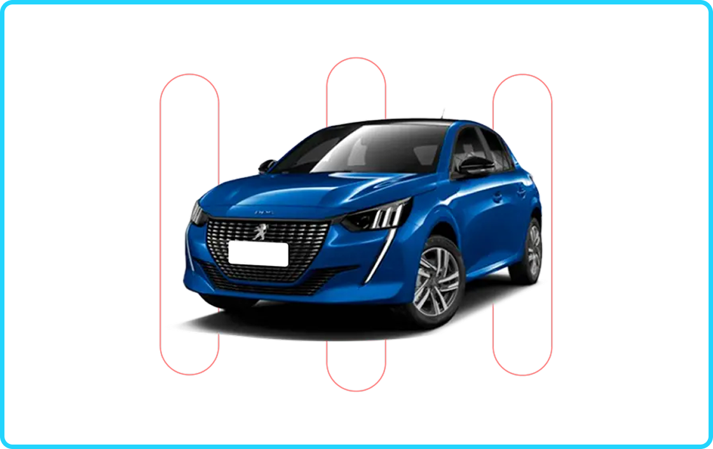
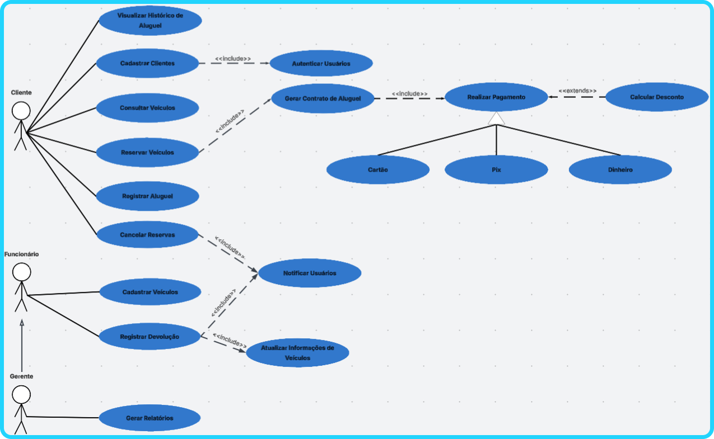

Sistema de Aluguel de Carros - Documento de Requisitos
Este projeto foi desenvolvido na disciplina de Arquitetura de Software com o objetivo de elaborar um documento completo de requisitos para um sistema de gerenciamento de aluguel de carros. O trabalho consistiu na análise de um cenário realista de negócio, onde uma locadora precisava modernizar seus processos operacionais por meio de uma plataforma digital integrada.

Durante o desenvolvimento do projeto, participei ativamente da construção da solução juntamente com a equipe, colaborando na definição da estrutura do sistema e na elaboração da documentação técnica. Minha principal contribuição foi a criação do Diagrama de Casos de Uso, responsável por representar visualmente as interações entre os diferentes perfis de usuários e as funcionalidades do sistema.
Além disso, também participei do levantamento e definição dos requisitos do sistema, auxiliando na identificação das funcionalidades essenciais da aplicação e na organização dos Requisitos Funcionais e Não Funcionais. Durante essa etapa, contribuí na construção dos casos de uso, ajudando a estruturar as principais operações do sistema, como cadastro de clientes, consulta de veículos, reservas, registro de aluguel, devoluções, pagamentos e geração de relatórios.
O sistema proposto contempla três perfis principais de usuários: Cliente, Funcionário e Gestor/Administrador, cada um com responsabilidades e permissões específicas dentro da plataforma. A solução foi projetada para centralizar processos que anteriormente eram realizados manualmente ou em planilhas, proporcionando maior eficiência operacional, melhor controle da frota e uma experiência mais ágil para os clientes.

Outro ponto importante do projeto foi a definição de atributos de qualidade do sistema, como segurança da informação, eficiência de processamento, disponibilidade da plataforma e facilidade de uso da interface. Esses aspectos foram considerados fundamentais para garantir que o sistema possa crescer de forma escalável e confiável.
Este trabalho proporcionou uma experiência prática no processo de engenharia de requisitos, modelagem de sistemas e documentação técnica, além de fortalecer habilidades de trabalho em equipe, análise de problemas e organização de soluções de software.
Ao final desta página também está disponível o download do documento completo do trabalho, que apresenta todos os requisitos do sistema, a modelagem realizada e os diagramas desenvolvidos durante o projeto.
Baixar documentação completa do projeto